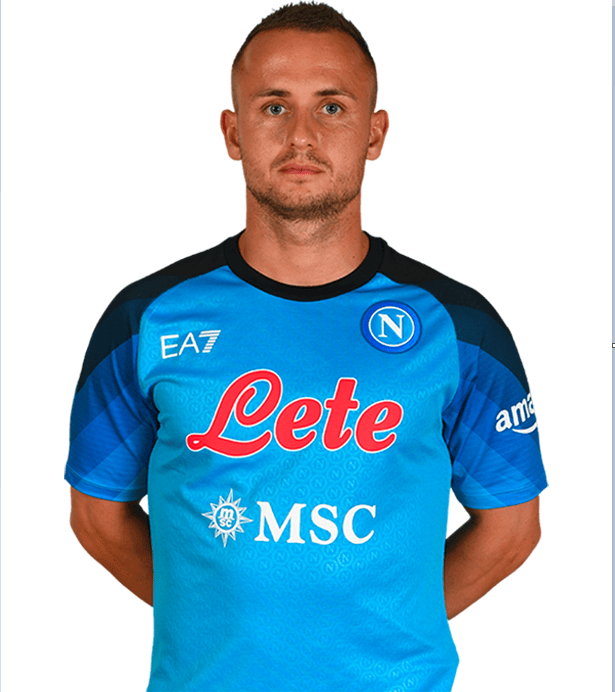

Personal Information
Name: Stanislav Lobotka
Birthdate: November 25, 1994
Nationality: Slovakian
Height: 178 cm (5 feet, 10 inches)
Position: Central midfielder | #68
About The Player
Stanislav Lobotka is a Slovakian professional footballer who plays as a central midfielder for the Spanish La Liga club Sevilla FC and the Slovakia national team. Born on November 25, 1994, in Slovakia, Lobotka began his professional career at the age of 18 with the Slovakian club AS Trencin. He later played for Danish club FC Nordsjælland and Spanish club Celta Vigo before joining Napoli in 2020. Lobotka is known for his excellent passing ability, vision, and tactical intelligence on the pitch. He is also highly skilled in tackling and intercepting opposition attacks. Lobotka has represented the Slovakia national team since 2016 and has played in major tournaments such as the UEFA European Championship. At 28 years old, Lobotka is considered one of the best midfielders in La Liga and is highly valued by both club and country.
Statistics in All Competetions
Appearances: 38
Minutes Played: 3182
Goals Scored: 1
Assists: 1
Passes: 2350
Yellow Cards: 2
Red Cards: 0